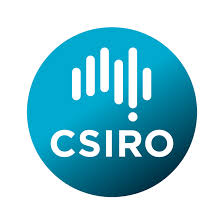

Software Developer · AI Engineer · Problem Solver
Hello, I'm Abir!
A highly motivated ICT student with a perfect 7/7 GPA, skilled in building scalable cloud-native solutions, automating complex workflows, and engineering AI-powered systems.
Education
Bachelor of ICT
University of Tasmania, Australia
Higher Secondary Certificate
Cumilla Cadet College, Bangladesh
verified Certifications
menu_book Relevant Coursework
Experience

CSIRO · Hobart, Tasmania
Software Developer Intern
- ▸ Architected scalable, cloud-native data publishing pipelines for the RV Investigator
- ▸ Leveraged GenAI tools (GitHub Copilot & LLMs) to optimize development
- ▸ Collaborated on cross-functional code reviews ensuring operational excellence
Data Science Summer Intern
- ▸ Automated data publishing for 12+ datasets with Docker & Kubernetes
- ▸ 75% reduction in manual workload through automated pipelines
- ▸ Built a user-friendly React Web UI for data configuration
Agentic AI Engineer Intern
Rapid Circle | Hobart, Tasmania
- ▸ Developing rapid-deployment AI solutions to automate business processes
- ▸ Conducting rigorous version control reviews for high code quality
Specialist Peer Mentor
University of Tasmania
- ▸ Mentoring 15 students with personalized study plans
The Toolkit
Hover any skill for context. Bigger means more battle-tested.
code Coding Languages
Cloud Certifications cloud
terminal DevOps & Frameworks
AI & Vibe Coding smart_toy
groups Soft Skills
Key Achievements
Workload Reduction
Engineered automated pipelines at CSIRO, demonstrating high-impact ownership
Datasets Automated
Fault-tolerant containerization via Docker and Kubernetes
Perfect GPA
Bachelor of ICT at University of Tasmania
Awards
Finalist – International Student of the Year
Study Tasmania · 2025
Best Academic Performer Award (First Year)
School of ICT, University of Tasmania · 2025
Gold Medal – Bangladesh National Physics Olympiad
17th in the country · 2021
Leadership
Founder & President
UTAS Cyber Security Club · 2025 – Present
Vice Chair
ACS Tasmania Emerging Professional Committee · 2026 – Present
International Student Ambassador
Study Tasmania · 2026 – Present
International Student Ambassador
City of Hobart · 2025 – 2026
Committee Member
School of ICT Course Advisory & Learning and Teaching Committee · 2025 – Present
Let's build something impactful together.
Currently open to software engineering internships, graduate roles, and exciting collaboration opportunities. Reach out and say hi!